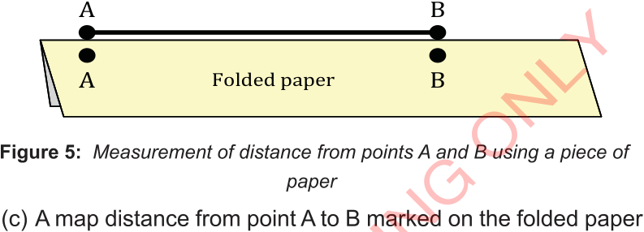
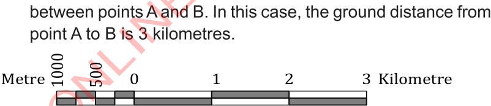
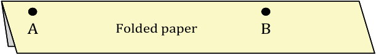

(b) Take a piece of paper and fold it to create a straight edge.
Place the edge parallel to the straight-line AB and accurately mark and label the points as A and B on the paper.
Make sure it aligns perfectly with points A and B as shown in Figure 5.

Figure 5: Measurement of distance from points A and B using a piece of paper
(c) A map distance from point A to B marked on the folded paper can be converted into real ground distance using a linear scale or ratio scale.
To use a linear scale, place the folded paper along the scale by aligning point A with zero (0) and point B with the corresponding point on the right side of the linear scale.
If point B is aligned with a certain number on the scale, as shown in Figure 6, that number represents the real ground distance between points A and B.
In this case, the ground distance from point A to B is 3 kilometres.

Metre 500 1000 0 1 2 3 Kilometre

Figure 6: Point B is aligned with the number 3, representing a distance of 3 kilometres from point A to point B
If point B is between two numbers on the linear scale, mark and label the number on the left side of point B (1) on the folded paper, as shown by the red mark and number in Figure 7(a).